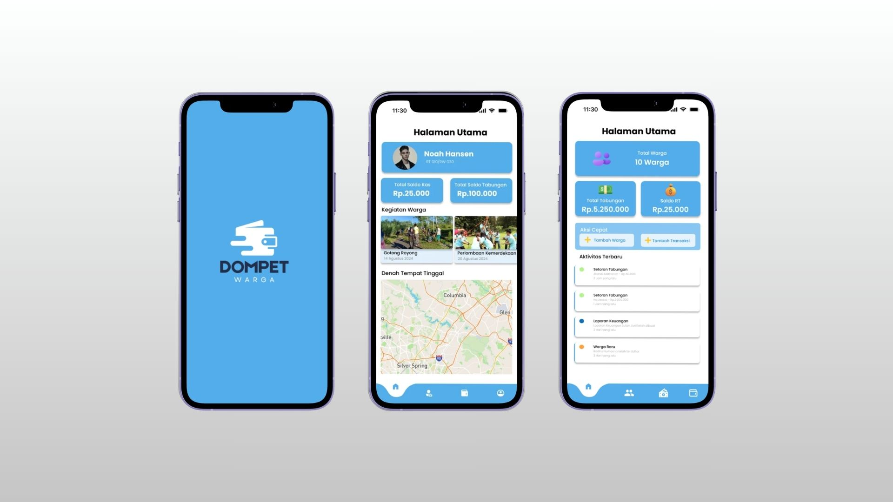
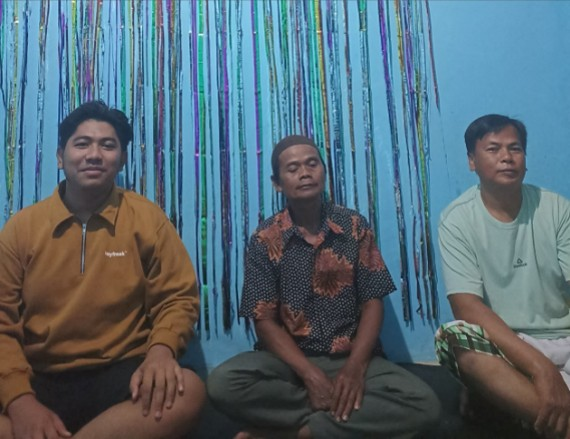
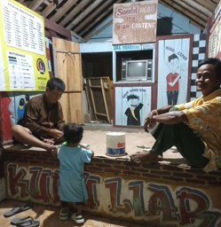
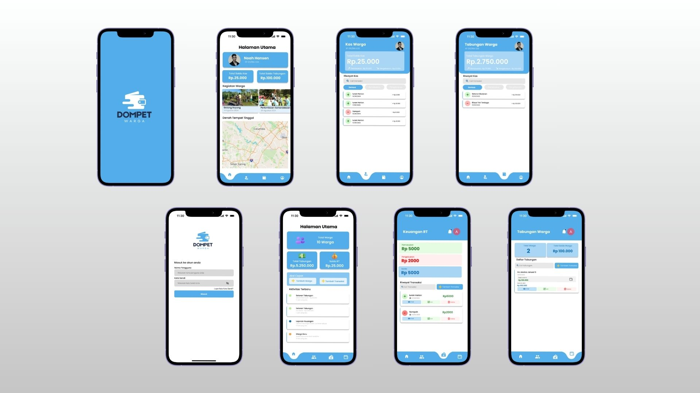

Dompet Warga
A mobile app that digitalizes community finance management, so RT administrators record accurately and residents see where the money goes.

Giving residents a clear view of their RT finances
This project started because RT 03/RW 09 still managed its finances by hand, and both administrators and residents wanted a clearer, faster way to do it.
Overview
Dompet Warga is a mobile app for RT 03/RW 09, Desa Klapagading. It gives administrators one place to record cash and savings, and gives residents direct access to financial reports.
Problem
Finances were recorded manually, which was slow and prone to errors. Residents had no easy way to see reports or their personal savings, so transparency suffered.
Users
Residents want to check RT finances, monthly dues, and savings from their phones. RT administrators need to record income and expenses accurately and produce reports quickly.
Scope
Observation and interviews, problem definition, information architecture, wireframes, high-fidelity UI for both roles, Figma prototype, and usability testing.
Where the manual process broke down
I started by watching how RT 03/RW 09 handled its money, then interviewed administrators and residents. Two things stood out.
Manual recording
Transactions were written by hand, which made reports slow to prepare and easy to get wrong.
Limited transparency
Residents couldn't see financial reports or their own savings unless they attended a meeting.
"Saya ingin melihat laporan keuangan RT dari rumah saja tanpa harus datang ke rapat."Muslihin, 48, resident persona


Muslihin, 48
- Wants RT reports on his phone
- Wants to track dues and savings
- Often misses meetings and information
Siti Aminah, 35
- Wants to record income and expenses digitally
- Wants fast, accurate monthly reports
- Struggles with scattered handwritten notes
Turning two different needs into one structure
What I framed one problem statement and organized the app around two roles.
Why Residents and admins need different things, so the app had to serve both without confusing either.
How Residents need to view bills, pay dues, and track history. Admins need to manage resident data, record payments, and generate reports. That became the information architecture below.
Admin: Dashboard · Manage Users · Cash · Savings · Notifications · Profile
From wireframe to final design
What Low-fidelity wireframes first, then high-fidelity screens for both roles.
Why Wireframes let me settle layout and navigation before spending time on visuals.
How The final design covers the splash screen, home dashboard, cash management, savings, and login flow.
Blue, chosen with the residents
Residents asked for blue as the main color and left the exact shade to our team. We picked the tone ourselves and used it as the app's main color.
Home as a summary
On both roles, Home summarizes the data from the other menus. Admins see an overview of what they manage, and residents see the key numbers at a glance.
Community photos on resident Home
At the residents' request, the resident Home also shows photos of community activities, so the app feels like it belongs to the neighborhood.

Checking that it works
What Usability testing with 10 users and 2 admins, all volunteers from the campus community who were not part of the capstone team.
Why To confirm both roles could finish their main tasks without help. Because this was a capstone project, I tested with willing outsiders rather than teammates, so the feedback would come from people who had not seen the design before.
How Participants completed task scenarios based on the main flows while I observed navigation, task completion, and feedback.
All participants could complete the task scenarios without trouble, so the design needed no changes after testing. The flows already matched how users and admins expected to use the app.
What came out of it
Result
The prototype was validated with 12 testers (10 users and 2 admins), and all of them completed every task scenario without help. The design answers each problem we found: admins record cash and savings digitally in one place, and users can read RT reports and their own savings from their phones without waiting for a meeting.
Feedback
Participants found the navigation easy to follow and could find cash and savings information without help. Admins felt that recording income and expenses in the app was simpler than writing them down by hand.
Lesson learned
The hardest part was translating the user flow into screens. A flow on paper can look simple, but each step has to become a clear, usable screen for both residents and admins. Mapping the flow carefully before designing made that translation much easier.